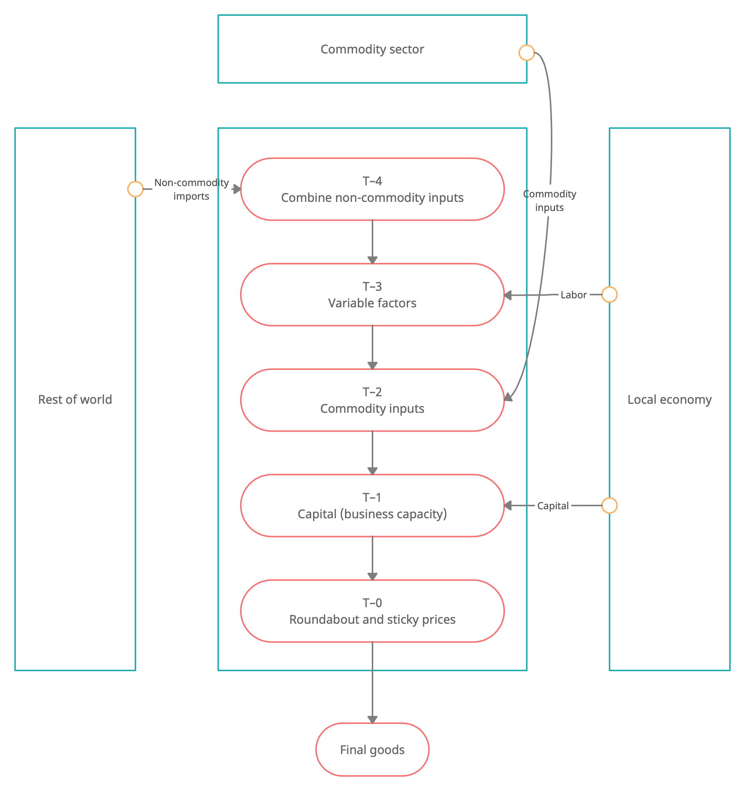

--
Local supply side
$$ \newcommand{\tsum}{\textstyle\sum} \newcommand{\extern}[1]{\mathrm{\mathbf{{#1}}}} \newcommand{\local}{\mathrm{local}} \newcommand{\roc}[1]{\overset{\scriptsize\Delta}{#1{}}} \newcommand{\ss}{\mathrm{ss}} \newcommand{\E}{\mathrm{E}} \newcommand{\ref}{{\mathrm{ref}}} \newcommand{\blog}{\mathbf{log}\ } \newcommand{\bmax}{\mathbf{max}\ } \newcommand{\bDelta}{\mathbf{\Delta}} \newcommand{\bPi}{\mathbf{\Pi}} \newcommand{\bU}{\mathbf{U}} \newcommand{\newl}{\\[8pt]} \newcommand{\betak}{\mathit{zk}} \newcommand{\betay}{\mathit{zy}} \newcommand{\gg}{\mathrm{gg}} \newcommand{\tsum}{\textstyle{\sum}} \newcommand{\xnf}{\mathit{nf}} \newcommand{\ratio}[2]{\left[\textstyle{\frac{#1}{#2}}\right]} \newcommand{\unc}{\mathrm{unc}} \notag $$
-
Several pairwise stages of production
-
Input factors
- Labor
- Intermediate imports
- Commodity inputs
- Capital
-
Real flexibilities to flatten the marginal cost schedule
- Variable utilization of capital
- Roundabout production
-
Sticky prices

Productivity
Global productivity component
Area-specific relative productivity component
Total area productivity
Time-varying elasticity of input factors
Production technogy based on a unit-elasticity (Cobb-Douglas) production function
Period profits are given by
and include the cost of changing the input factor proportions
Optimization problem with a possibly heavier discounting, \(\beta_y\in[0,1]\), to incorporate higher uncertainty of future profit flows
Optimal choice of input factors (omitting higher-order terms from the adjustment costs)
Production stages
\(T-4\): Combine imports from other areas
where
-
\(my_t\) is the intermediate import inputs into local production
-
\(mx_t\) is the intermediate import inputs into export production (re-exports)
\(T-3\): Combine non-commodity variable factors
where
- \(nv_t\) is the variable labor input with \(\gamma_{nv} nh_\ss\) being the overhead labor needed to maintain production regardless of the output actually produced
T-2: Combine variable factors with capital
\(T-1\): Add dependence on commodity inputs
\(T-0\): Add a roundabout production layer and sticky prices
Sticky prices
Downward sloping demand curve
where
- \(\mu_{py}\) is the monopoly power of the representative producer in its own market, and \({\left.{\mu_{py}}\middle/\left(\mu_{py}-1\right)\right.}\) is the underlying elasticity of substitution of demand for the producer's output (which gives rise to the monopoly power)
Period profits
with the price adjustment costs given by $$ \Xi_{py,t} \equiv \tfrac{1}{2} \, \xi_{py} \, \extern{py}_t \, \extern{y_t}\, \bigl( \Delta \blog py_t - j_t \bigr)^2 $$
where \(j_t\) is a price indexation factor given by
Maximization problem
where
- \(\beta_{y}\) is an additional discount factor to compensate for the uncertainty of cash flows generated by real economic activity
Optimal price setting with no adjustment cost (steady state) is a markup over the marginal cost
Optimal price setting with adjusutment cost is a Phillips curve
Total profits
Total profits summed up across all production stages are given by
Final goods
The final goods produced domestically are demanded as one of the following types of goods
-
Private consumption, \(ch_t\)
-
Government consumption, \(cg_t\)
-
Private investment, \(ih_t\)
-
Inputs into export production, \(yx_t\)
The market clearing conditions is therefore given by
where
- \(ch_t\) is private consumption (by households)
- \(cg_t\) is government consumption
- \(ih_t\) is private investment (by households)
- \(yx_t\) is the local component in the export production
![[production-math]]
GEES Local production module
Declare quantities
!variables(:production)
"Area specific productivity component" ar
"Shadow value of household budget constraing" vh
"Price of private consumption" pc
"Price of private investment" pih
"Domestic intermediate inputs" yz
"Stage T-3 output" y3
"Stage T-2 output" y2
"Stage T-1 output" y1
"Stage T-0 output" y
"Price of stage T-3 output" py3
"Price of state T-2 output" py2
"Price of state T-1 output" py1
"Price of stage T-0 output" py0
"Price of commodity input into production" pq
"Commodity input into production" mq
"Variable labor input into production" nv
"Nominal GDP" ngdp
"Real GDP index, Rate of change" roc_gdp
"Per-capita real GDP index, Rate of change" roc_gdp_to_nn
"Price of domestic production" py
"Nominal household rate, LCY" rh
"Price of final domestic output, Rate of change" roc_py
"Price of final domestic output, Rate of change, Point of reference" ref_roc_py
"Price of consumer goods, Rate of change" roc_pc
"Utilization rate of production capital" u
"Stage T-3 output, Rate of change" roc_y3
"Variable labor, Rate of change" roc_nv
"Auxiliary variable for steady-state calibration of upsilon_0" upsilon_1_py_to_pu
"Auxiliary equation for steady-state calibration of nu_0" nch_to_netw_minus_nu_0
Control log-status of variables
-
If a variable is growing at a nonzero rate in steady state then it must be declared as a log-variable
-
If a variables is changing by a constant in steady state then it must not be declared as a log-variable
-
If a variable can be negative, then it must not be declared as a log-variable
-
If there is conflict between rules 1 and 3, redefine the variable as ratio (so that the ratio is stable in steady state), and do not declare the ratio as a log-variable
!log-variables !all-but
zh, nch_to_netw_minus_nu_0
!parameters(:production :steady)
"S/S Area specific productivity component" ss_ar
"Share of overhead labor" gamma_n0
"Share of intermediate imports in stage T-3 production" gamma_m
"Share of capital services in stage T-2 production" gamma_uk
"Share of commodity inputs in stage T-1 production" gamma_q
"Share of roundabout intermediates in stage T-0 production" gamma_yz
"Monopoly power (markup) of local producers" mu_py
"Markup to cover overhead labor" mu_y3
!parameters(:production :transitory)
"Autoregression in area specific productivity component" rho_ar
"Weight on S/S inflation in inflation indexation" zeta_py
"Stage T-2 input factor adjustment cost parameter" xi_y2
"Stage T-1 input factor adjustment cost parameter" xi_y1
"Price adjustment cost parameters" xi_py
!shocks(:production)
"Shock to area specific productivity component" shk_ar
"Shock to final price setting" shk_py
Define substitutions
!substitutions
% Stage T-2 input factor adjustment marginal cost
adj_uk := (log(uk/y2)-log(uk{-1}/y2{-1}))-&rdf*(log(uk{+1}/y2{+1})-log(uk/y2));
adj_y3 := (log(y3/y2)-log(y3{-1}/y2{-1}))-&rdf*(log(y3{+1}/y2{+1})-log(y3/y2));
% Stage T-1 input factor adjustment marginal cost
adj_y2 := (log(y3/y2)-log(y3{-1}/y2{-1}))-&rdf*(log(y3{+1}/y2{+1})-log(y3/y2));
adj_q := (log(mq/y2)-log(mq{-1}/y2{-1}))-&rdf*(log(mq{+1}/y2{+1})-log(mq/y2));
% Final price adjustment marginal cost
adj_py := log(roc_py/ref_roc_py) - beta*gg_zy*zy*log(roc_py{+1}/ref_roc_py{+1});
Define equations
!equations(:production)
%% Productivity
"Area-specific relative productivity component"
log(ar) = ...
+ rho_ar * log(ar{-1}) ...
+ (1 - rho_ar) * log(ss_ar) ...
+ shk_ar ...
!! ar = ss_ar;
%% Stage T-3 production: Labor and intermediate imports
"Definition of variable labor input"
nv = (nh - gamma_n0*&nh) * nf;
"Stage T-3 production function"
y3 = (my/gamma_m)^gamma_m * ([ar * gg_a * nv]/(1-gamma_m))^(1-gamma_m);
"Demand for intermediate imports"
gamma_m * py3 * y3 = (pmm * gg_dmm) * my * [1 + xi_y3*($adj_mm$)] ...
!! gamma_m * py3 * y3 = (pmm * gg_dmm) * my;
"Demand for labor"
(1-gamma_m) * py3 * y3 = mu_y3 * w * nv * [1 + xi_y3*($adj_nv$)] ...
!! (1-gamma_m) * py3 * y3 = mu_y3 * w * nv;
%% Stage T-2 production: Variable inputs and capital
y2 = (uk/gamma_uk)^gamma_uk * (y3/(1-gamma_uk))^(1-gamma_uk);
gamma_uk * py2 * y2 = pu * uk * [1 + xi_y2*($adj_uk$)] ...
!! gamma_uk * py2 * y2 = pu * uk;
(1-gamma_uk) * py2 * y2 = py3 * y3 * [1 + xi_y2*($adj_y3$)] ...
!! (1-gamma_uk) * py2 * y2 = py3 * y3;
%% Stage T-1 Production: Add Commodity
py1 = py2^(1 - gamma_q) * pq^gamma_q ...
!! y1 = (y2/(1-gamma_q))^(1-gamma_q) * (mq/gamma_q)^gamma_q;
% (1-gamma_q) * py1 * y1 = py2 * y2 * [1 + xi_y1*($adj_y2$)] ...
(1-gamma_q) * &py1 * y1 = &py2 * y2 ...
!! (1-gamma_q) * py1 * y1 = py2 * y2;
% gamma_q * py1 * y1 = pq * mq * [1 + xi_y1*($adj_q$)] ...
(gamma_q) * &py1 * y1 = &pq * mq ...
!! gamma_q * py1 * y1 = pq * mq;
%{
y2 = (1 - gamma_q) * y1;
mq = gamma_q * y1;
py1 = (1 - gamma_q)*py2 + gamma_q*pq;
%}
%% T-0: Final stage production: Flatter marginal cost
% y + yz = (y1/(1-gamma_yz))^(1-gamma_yz) * (yz/gamma_yz)^gamma_yz;
% (1-gamma_yz) * py0 * (y + yz) = py1 * y1;
% gamma_yz * py0 * (y + yz) = py * yz;
y = y1;
py0 = py1;
yz = 1;
%% Final price setting
mu_py*py0*exp(shk_py) = py*[1 + (mu_py-1)*xi_py*($adj_py$)] ...
!! py = mu_py * py0;
ref_roc_py = roc_py{-1}^(1-zeta_py) * &roc_py^zeta_py;
pc = py;
pih = py;
%% Distribution of final goods
y = ch + cg + ih + yxx;
%% Rates of change
!for cg, pc, py, y3, nv !do
roc_? = ? / ?{-1};
!end
%% Definitions
"Per-capita private consumption"
ch_to_nn = ch / nn;
"Nominal GDP"
ngdp = pc*ch + pih*ih + pc*cg + pxx*xx - pmm*mm + pq*(xq - mq);
"Real GDP index, Rate of change"
roc_gdp = ...
+ (pc*ch/ngdp + pc{-1}*ch{-1}/ngdp{-1})/2 * roc(ch) ...
+ (pih*ih/ngdp + pih{-1}*ih{-1}/ngdp{-1})/2 * roc(ih) ...
+ (pc*cg/ngdp + pc{-1}*cg{-1}/ngdp{-1})/2 * roc(cg) ...
+ (pxx*xx/ngdp + pxx{-1}*xx{-1}/ngdp{-1})/2 * roc(xx) ...
- (pmm*mm/ngdp + pmm{-1}*mm{-1}/ngdp{-1})/2 * roc(mm) ...
+ (pq*xq/ngdp + pq{-1}*xq{-1}/ngdp{-1})/2 * roc(xq) ...
- (pq*mq/ngdp + pq{-1}*mq{-1}/ngdp{-1})/2 * roc(mq) ...
!! roc_gdp = gg_ss_roc_a * gg_ss_roc_nt;
"Per-capita real GDP index, Rate of change"
roc_gdp_to_nn = roc_gdp / roc_nn;
Postprocessing equations
!postprocessor(:production)
nch_to_ngdp = pc * ch / ngdp;
nih_to_ngdp = pih * ih / ngdp;
nkh_to_ngdp = pk * k / ngdp;
curr_to_ngdp = ($curr$) / ngdp;
gdp = gdp{-1} * roc_gdp;
!log-variables !all-but
nch_to_ngdp
nih_to_ngdp
nkh_to_ngdp
curr_to_ngdp